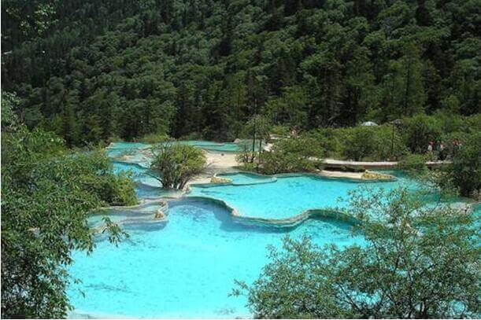
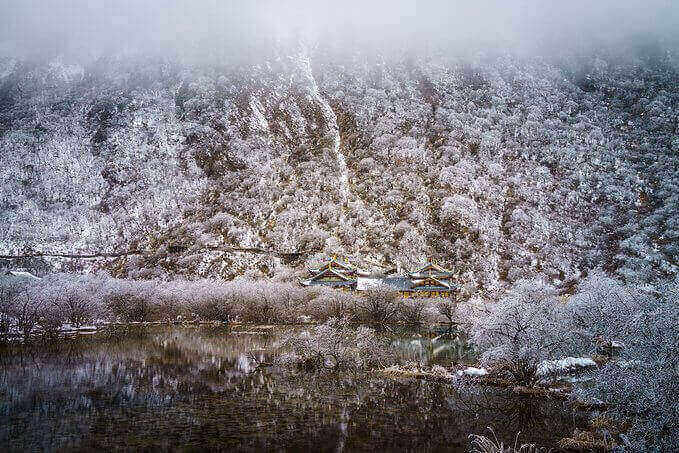
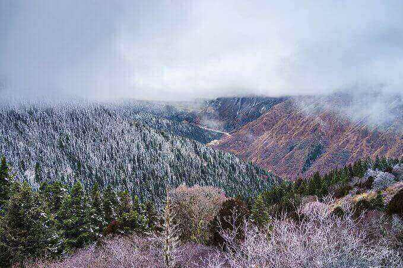
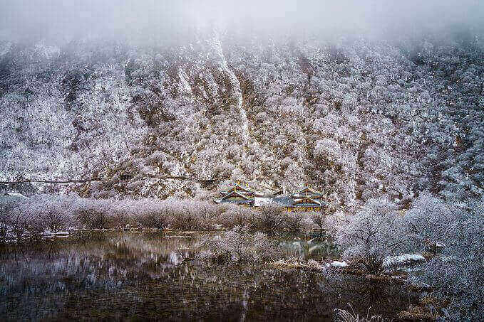
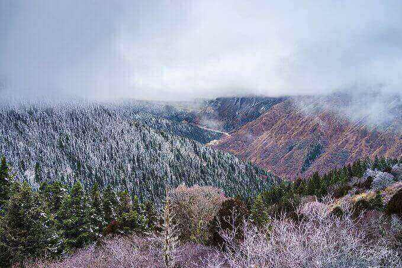

morly旅游圈
关键词：高山摩天 峡谷纵横 碧水荡荡 世界奇观 人间瑶池 中国一绝 黄龙风景区位于中国西部四川省阿坝藏族羌族自治州松潘县境内，与九寨沟毗邻。 黄龙景区由黄龙本部和牟尼沟两部份组成，黄龙本部主要由黄龙沟、丹云峡、雪宝顶等景区构成，牟尼沟部份主要是扎嘎瀑布和二道海两个景区。 黄龙风景区是景观奇特、资源丰富、生态原始、保存完好、具有重要科学和美学价值的风景名胜区，被誉为人间瑶池。 主景区黄龙沟，似中国人心目中“龙”的形象，因而历来被喻为“人间瑶池”、“中华象征”。在当地更为各族乡民所尊祟，藏民称之为“东日·瑟尔峻”，意为东方的海螺山（指雪宝山）、金色的海子（指黄龙沟）。
最佳游季:
黄龙属高原温带亚寒带季风气候类型。气候特点是：湿润寒冷，一年中冬季漫 长，夏无几日，春秋相连。年平均气温7℃，日照充足，早晚雾多，雨量多集中在每年5~8月。到黄龙旅游以春末至秋初为宜，9月底至10月最佳。
最佳时间:
黄龙风景区年平均气温为5-7℃，最热的7月份平均气温17℃，最冷的1月份平均气温3℃。每年4月至11月为游览黄龙的最佳时间，冬季将停止开放。
游览顺序:
到黄龙沟风景区旅游，建议朋友们先坐索道上去，再步行下山，边走边看风景。
特色活动:
每年农历6月15日，相传为黄龙真人修道成仙日，都要举办盛大的庙会，地点在黄龙后寺，方园数百里的各族民众聚集在广场上，尽情歌午，热闹非凡。
特色餐饮:
黄龙景区内无餐馆，可在景区外面用餐，也可自带。或在松潘或川主寺解决。须注意，黄龙海拔太高，不要在游玩途中大吃大喝，以免身体不适。
黄龙物资多从外面运入，所以吃的价格很贵。建议游客不要对九寨沟的餐饮抱太大希望。
在当地的酒店内可以品尝到洋芋糌粑、九寨柿饼、荞面饼、九寨酸菜面等风味小吃。
藏族特色食品还有烤全羊、酥油茶、青稞酒、奶制品（奶酪、奶渣、奶皮和酸奶）、牦牛肉、虫草鸭等。
住宿提示:
黄龙景区附近宾馆不多，主要有瑟尔嗟宾馆、华龙山庄等，选择面较小。华龙山庄三星级，条件不错，旺季门市价约600元左右；瑟尔嗟宾馆是一家招待所，条件一般，价格较便宜。
另外黄龙海拔高，身体可能会不舒服，所以不建议在这里住宿，最好选择住在川主寺或松潘。
购物须知:
在九寨沟、黄龙一带，如果幸运可以买到当地独有的羌族刺绣、茂汶苹果、中草药及藏族手工艺品“藏戒、藏刀、佛珠”等。
1.羌族刺绣：盛行于汶川、茂汶一带羌族聚居地，多采用几何花纹处理手法，线条粗犷，构图生动，形象饱满，具有鲜明的民族特色。
2.茂汶苹果：醇甜细腻，芳香，以金冠红心，红冠品种为佳。
3.中草药：川西北盛产贝母、虫草、麝香等珍贵药材。花椒、蕨菜、木耳等也值得一买。藏饰精制美丽，不是很贵，可以还价。虽然藏刀很有特色，但机场不允许托运，所以不建议您购买。
在黄龙可购买到人参果、雪莲花、松贝、虫草、天麻等土特产品，和刺绣、藏刀、雕刻、金银首饰等纪念品。但是如果分辨不出产品真假和质量的话，建议不买或少买。另外可在松潘县城购买纪念品，价格会便宜许多。
特别提醒：到黄龙旅游除常用药品外，体质较弱者请准备抗高原反应药物：高原红景天、西洋参含片、诺迪康胶囊、百服宁等；还应备金施尔康、善存片之类的维生素药物。
摄影贴士:
站在池边拍彩池，很难有壮阔的感觉，最好的办法就是登上黄龙沟两侧的山坡，从高处俯瞰整个钙华滩流和彩池群，把美景尽收眼底。如果再能考虑光线，利用高逆光，将彩池两侧的山坡淹没在黑色中，则更能突出彩池亮丽的线条。
票价:
1.游览门票：旺季（4月1日到11月15日）200元/人，优惠票:150元/人。
淡季（11月16日到次年3月31日）80元/人，优惠票70元/人。
优惠对象：学生、现役军人、60岁以上老年人、残疾人、记者。
免票对象：离休干部、革命伤残军人、援朝中国人民志愿军军人，1.3米以下儿童、驾驶员（三证齐全）。
2.红岩关索道票价:上行80元/人，下行40元/人。
2018年9月20日起，黄龙风景名胜区旺季门票价格由200元／人降为170元／人，淡季门票价格维持60元／人。
内容整理至网络，如有侵权，请联系我们！1255394075@qq.com

 


